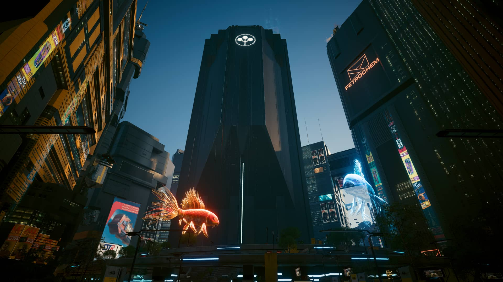

Arasaka Tower

Ubicación
City Center, en el centro de Night City.
Descripción
La Arasaka Tower es uno de los edificios más impresionantes de Night City. Este enorme rascacielos representa el poder de las grandes corporaciones.
¿Qué se puede hacer?
- Observar la arquitectura.
- Recorrer el centro de la ciudad.
- Tomar fotografías.
- Conocer la zona corporativa.
¿Por qué visitarlo?
Se recomienda visitarlo porque es uno de los símbolos más importantes de Night City y representa su lado tecnológico y futurista.